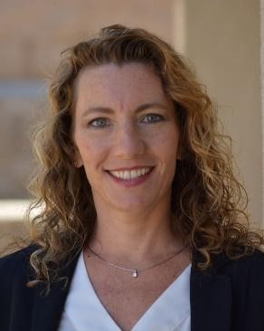
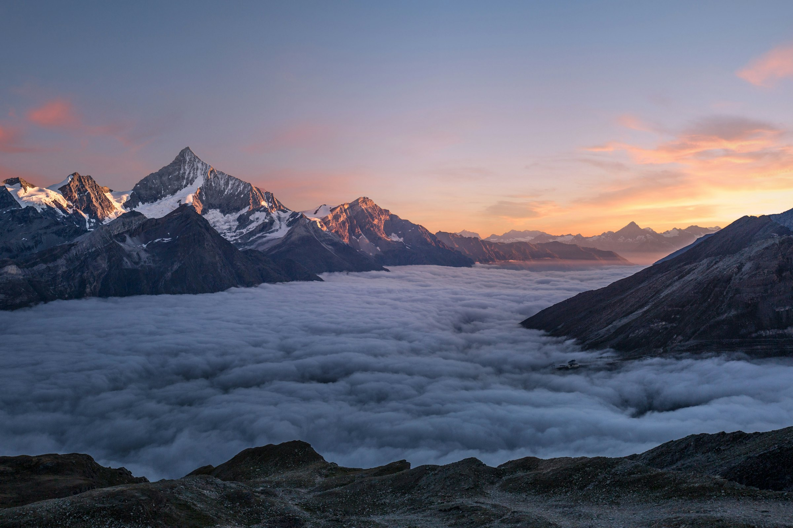

About
Marcie M. Merksamer
Founder of Topography Consulting LLC. Environmental biologist. Twenty-six years helping the maritime industry manage aquatic invasive species.

Professional background
Trained as an environmental biologist, Marcie has worked on aquatic invasive species and ballast water management for 26 years, 24 of them as an independent environmental consultant in the maritime sector.
Much of that work has involved helping clients obtain approvals for ballast water management systems through classification societies and international administrations. That has meant research on aquatic toxicology for chemical-based systems, environmental and human health risk assessments of disinfection by-products, dossier preparation, data analysis and complex agency interactions.
She also knows the practical side, from the logistics of testing systems on board ships to their operation, maintenance and crew training. She now applies that experience to biofouling management, with a constant aim: productive working relationships between scientists, technology developers, industry and regulators.

Why Topography
Marcie plans her own explorations on paper maps and charts, on land and at sea. Their lines show where the peaks and valleys are, how hard the climb will be and where the coastline offers safe harbor. They also show that there is more than one way to a destination: over, under, around or through.
The ocean has a topography too, in the peaks and valleys of its waves. The name reflects a passion for the planet, from the mountains to the sea, and a commitment to protecting it.
“No problems; only solutions.”
Experience and qualifications
Twenty-six years in aquatic invasive species and ballast water management. Twenty-four years as an independent environmental consultant in the maritime sector.
- Today
Founder and Owner
Topography Consulting LLC
- 2018
Co-founder and Secretary-General
Biosecurity & Environmental Marine Association (BEMA), a non-profit, technically based industry association with Consultative Status at the IMO. Marcie represents BEMA on the delegation to the IMO.
- 2002
Co-founder and former Vice President
EnviroManagement, Inc., an environmental services and consulting company
- Education
B.S., Biological Sciences
Concentration in Environmental Science, California Polytechnic State University, San Luis Obispo
Let’s discuss your compliance needs.
Practical guidance for the environmental challenges facing the maritime industry.